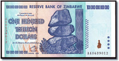
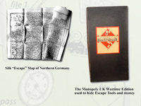

Una colonia británica fundada por morosos
Wed, 15 Feb 2012 01:45:53 PST
Las Trece Colonias es el nombre que se ha dado históricamente a las posesiones coloniales de Gran Bretaña en la costa atlántica de América del Norte y que el 4 de julio de 1776, con la firma de la Declaración de Independencia, se unificaron bajo un gobierno independiente para crear los actuales Estados Unidos. Entre [...]
Una colonia británica fundada por morosos escrito por Javier Sanz en: Historias de la Historia
También puedes seguirnos en Twitter, Facebook y Google+
Las Trece Colonias es el nombre que se ha dado históricamente a las posesiones coloniales de Gran Bretaña en la costa atlántica de América del Norte y que el 4 de julio de 1776, con la firma de la Declaración de Independencia, se unificaron bajo un gobierno independiente para crear los actuales Estados Unidos. Entre estas colonias, estaba Georgia… la número 13.
En la Gran Bretaña del siglo XVIII hasta pequeñas deudas económicas te podían llevar a la cárcel. Además, en muchas ocasiones, el plazo de dicha condena estaba supeditado a la devolución de la deuda contraída… harto difícil si se estaba encerrado. James Oglethorpe, general británico y miembro del Parlamento, conoció las duras condiciones de las prisiones británicas por un buen amigo condenado por una pequeña deuda. En 1728, y con la autorización del Parlamento, presidió una Comisión de Investigación de las condiciones de las cárceles cuyas conclusiones fueron que, lógicamente, se debían mejorar y que había que dar salida a los morosos encarcelados, ya que dicha reclusión impedía poder conseguir dinero para saldar la deuda. Esta Comisión consiguió que el Parlamento modificase las leyes y muchos morosos fueron puestos en libertad… y aquí llegó otro problema: nadie contrataba a los deudores. Sin ninguna posibilidad legal de ganarse la vida su única salida era la delincuencia… y otra vez a prisión. Ya que James Oglethorpe había creado el problema, buscó la solución: poder empezar de cero en el Nuevo Mundo. Para ello, junto a un grupo filantrópico, crearon el Patronato para el establecimiento de la colonia de Georgia y solicitaron al rey, George II, la carta real y la concesión de tierras para dicho establecimiento. La metrópoli ahorra los gastos de manutención en la cárcel, se libraba de potenciales delincuentes, reforzada sus posesiones en América y, además, el nombre de la colonia, Georgia, era un guiño al rey… en abril de 1732, el rey firmaba la propuesta.
En noviembre de 1732, Oglethorpe partía en el Ann junto a unos 100 colonos (morosos en su mayoría pero también gentes sin futuro y perseguidos por cuestiones religiosas) rumbo al Nuevo Mundo. El 12 de febrero de 1733 llegaron a su destino, en el que fundaron la ciudad de Savannah que años más tarde sería la primera capital del estado de Georgia. Supieron arreglar, de forma amistosa, las primeros diferencias con los nativos norteamericanos y, además, establecieron una normativa muy avanzada para su tiempo: igualdad agraria diseñada para apoyar y perpetuar una economía basada en la agricultura familiar e ilegalizar la esclavitud. Aunque años más tarde la presión de la metrópoli y de las propias colonias echaron por tierra aquella normativa igualitaria. También tuvo que soportar la presión de los españoles de Florida que alegaban que la colonia estaba en territorio español, hasta que los derrotó en la batalla de Bloody Marsh en 1742.
Fuentes: Colonial Ancestors, Georgia History,Artículos relacionados:
- El día que los escoceses intentaron colonizar Panamá
- Y Colón llegó a las Indias…
- Cuando los espaldas mojadas eran los que ahora persiguen inmigrantes
- El canal de Panamá no se construyó en Nicaragua por culpa de un sello
- Todos los que llegaron a América antes que Colón
Una colonia británica fundada por morosos escrito por Javier Sanz en: Historias de la Historia
También puedes seguirnos en Twitter, Facebook y Google+
El wonderbra de Eva Herzigova ya lo lucían hace 20 siglos
Mon, 13 Feb 2012 02:00:14 PST
Supongo que casi todos os acordaréis de la campaña publicitaria del Wonderbra, “Hello Boys“, protagonizada por Eva Herzigova en los años 90. Revolucionó el mercado, disparó las ventas e incluso se crearon leyendas urbanas, como la que corría por los mentideros de que este anuncio colocado en las vallas publicitarias había provocado más de un [...]
El wonderbra de Eva Herzigova ya lo lucían hace 20 siglos escrito por Javier Sanz en: Historias de la Historia
También puedes seguirnos en Twitter, Facebook y Google+
Supongo que casi todos os acordaréis de la campaña publicitaria del Wonderbra, “Hello Boys“, protagonizada por Eva Herzigova en los años 90. Revolucionó el mercado, disparó las ventas e incluso se crearon leyendas urbanas, como la que corría por los mentideros de que este anuncio colocado en las vallas publicitarias había provocado más de un accidente automovilístico… por despistes al volante. El año pasado fue designada por el “Outdoor Hall of Fame” como el anuncio exterior más llamativo en décadas.
Pues siento deciros que aunque el boom fue en los años 90, y según la Wikipedia fue registrado en los Estados Unidos en 1935, es un invento… de los romanos.. El mamillare era una banda de tejido fino que servía para cubrir los pechos y, como los romanos gustaban de pechos pequeños, para limitar su crecimiento. Además, también existía el strophium que eran una cintas de cuero bajo los pechos que no los tapaba pero servían para realzar el busto… a modo wonderbra.
Artículos relacionados:
- El gesto más representado en la Historia.
- El primer Iron Man de la historia fue un romano
- La salsa más popular era española.
- Gazapos de la serie Hispania: los nombres
- Un día de putas… en la antigua Roma.
El wonderbra de Eva Herzigova ya lo lucían hace 20 siglos escrito por Javier Sanz en: Historias de la Historia
También puedes seguirnos en Twitter, Facebook y Google+
El billete y el cheque de más valor en la historia
Fri, 10 Feb 2012 01:30:55 PST
Ya hablamos de la terrible hiperinflación que sufrió Alemania en los años 20 en la que, por ejemplo, el billete de metro pasó de 0,10 marcos, en 1918, a 150 millones en los años 20; pero comparado con el billete emitido en Zimbabwe y el cheque de Mitsubishi UFJ Financial Group se queda en calderilla. [...]
El billete y el cheque de más valor en la historia escrito por Javier Sanz en: Historias de la Historia
También puedes seguirnos en Twitter, Facebook y Google+
Ya hablamos de la terrible hiperinflación que sufrió Alemania en los años 20 en la que, por ejemplo, el billete de metro pasó de 0,10 marcos, en 1918, a 150 millones en los años 20; pero comparado con el billete emitido en Zimbabwe y el cheque de Mitsubishi UFJ Financial Group se queda en calderilla.
El caso de Zimbabwe, igual que el de Alemania, se debió a la brutal hiperinflación. Según los datos de Cato Institute, Zimbabwe fue el primer país en el siglo XXI en alcanzar la hiperinflación: en febrero de 2007, la tasa de inflación de Zimbabwe llega al 50% por mes y el 14 de octubre de 2008… 89.700.000.000.000.000.000.000% anual (tenéis la tabla en el enlace anterior y supone que los precios se dupliquen cada 24 horas). Ante esta situación la Reserve Bank of Zimbabwe emitió un billete cuyo valor nominal era de 100 billones de dólares (one hundred trillion dollars)

El caso del cheque nada tiene que ver con la hiperinflación sino con algo tan actual como el rescate a una entidad financiera… la estadounidense Morgan Stanley. En septiembre de 2008, Mitsubishi UFJ Financial Group y Morgan Stanley anunciaron el acuerdo por el que el banco japonés adquiría, por un valor de 9 mil millones de dólares, el 21% de Morgan Stanley. El día que se debía realizar la transacción, 13 de octubre de 2008, coincidió con el Columbus Day (fiesta americana que se celebra el segundo lunes de octubre) en el que los bancos americanos cierran. Por tanto, no se pudo hacer la transacción electrónicamente y Mitsubishi UFJ Financial Group emitió un cheque por dicha cantidad.

Fuentes e imágenes: Business Insider, Glen Stephens StampsArtículos relacionados:
- ¿Y si tenemos que volver a utilizar el dinero de madera?
- Un billete de metro de un millón de pesetas
- El asentamiento europeo más antiguo de EEUU es español.
- La cena más cara de la Historia
- Los 10 días que se perdieron en la Historia
El billete y el cheque de más valor en la historia escrito por Javier Sanz en: Historias de la Historia
También puedes seguirnos en Twitter, Facebook y Google+
El genocida y el filósofo, compañeros de clase
Wed, 08 Feb 2012 02:20:49 PST
Seguro que muchos de vosotros habréis tecleado los nombres de vuestros compañeros del colegio en Google o Facebook para ver qué ha sido de ellos y cómo les ha tratado la vida… yo reconozco que lo he hecho pero sin mucho éxito. Pues los caprichos del destino quisieron unir en una misma clase al genocida [...]
El genocida y el filósofo, compañeros de clase escrito por Javier Sanz en: Historias de la Historia
También puedes seguirnos en Twitter, Facebook y Google+
Seguro que muchos de vosotros habréis tecleado los nombres de vuestros compañeros del colegio en Google o Facebook para ver qué ha sido de ellos y cómo les ha tratado la vida… yo reconozco que lo he hecho pero sin mucho éxito.
Pues los caprichos del destino quisieron unir en una misma clase al genocida Adolf Hilter y al filósofo Ludwig Wittgenstein. Respecto a Hitler poco que añadir y Ludwig se convirtió en uno de los filósofos más influyentes del siglo XX.
Coincidieron en el mismo colegio de Linz y como eran de la misma edad, apenas 6 días de diferencia, en la misma clase. Y aunque algunos han querido ver en esta coincidencia el nacimiento del antisemitismo de Hitler, ya que Wittgenstein era de ascendencia judía, incluso al estudiante judío de su escuela en Mein Kampf, es harto difícil llegar a esta conclusión. Creo que sería más acertado decir que de existir algún tipo de animadversión entre ellos, sería por la envidia que podría tenerle Hitler a Wittgenstein… comenzaron juntos pero se graduaron con dos años de diferencia (Hitler repitió y a Wittgenstein lo adelantaron un curso).
Y para que no haya lugar a dudas os dejo una foto de Ludwig con sus hermanos. Creo que el niño Hitler es evidente y no hacen falta más pruebas.
Ludwig es el niño de la derecha
Gracias a @knbaraldi. Fuentes: Strange History, El Judío de Linz – Kimberley Cornish Artículos relacionados:
- Operación Valkiria – Jesús Hernández
- Las otras operaciones Valkiria
- Un ingeniero escocés nos salvó de la ocupación nazi
- Ley seca, tabaco y limpieza moral
- El cadáver encontrado en Huelva que engañó a Hitler
El genocida y el filósofo, compañeros de clase escrito por Javier Sanz en: Historias de la Historia
También puedes seguirnos en Twitter, Facebook y Google+
¿Por qué los soldados americanos asesinaban a sus propios oficiales en Vietnam?
Tue, 14 Feb 2012 01:45:59 PST
Durante la Guerra de Vietnam, entre 1964 y 1975, se produjo un curioso y peligroso fenómeno dentro del ejército americano… el llamado Fragging (acto de atacar a un superior en la cadena de mando con la intención de asustarlo o matarlo y usando, generalmente, granadas de fragmentación; de ahí su nombre). El uso de estas [...]
¿Por qué los soldados americanos asesinaban a sus propios oficiales en Vietnam? escrito por Javier Sanz en: Historias de la Historia
También puedes seguirnos en Twitter, Facebook y Google+
Durante la Guerra de Vietnam, entre 1964 y 1975, se produjo un curioso y peligroso fenómeno dentro del ejército americano… el llamado Fragging (acto de atacar a un superior en la cadena de mando con la intención de asustarlo o matarlo y usando, generalmente, granadas de fragmentación; de ahí su nombre). El uso de estas granadas, que nada tiene que ver con el fuego amigo, para amedrentar o matar a los oficiales se debía a las dificultades para averiguar quién había sido el autor, máxime si se produce en el fragor de la batalla, y a diferencia de utilizar una bala.

En los primeros años de la guerra de Vietnam, el ejército de los EEUU estaba totalmente convencido de la necesidad de aquella guerra y se mostraba unido y disciplinado. A medida que la guerra se prolongó, la moral y la disciplina se deterioraron. Igualmente ocurrió entre la población civil americana que contemplaba los horrores de la primera guerra retransmitida por los medios. A finales de los 60 se producen dos hechos que marcarán el progresivo decaimiento de la moral y el aumento de la irascibilidad de la tropas: primero, la Administración Nixon, buscando una salida digna para EEUU del conflicto, decide retirar las tropas progresivamente – aunque en la práctica se siguen enviando hombres y siguen muriendo soldados-; y, segundo, el asesinato de Martin Luther King desata la violencia racial. El malestar de la sociedad americana se traslada al frente de batalla: se cuestionan y desobedecen las órdenes – ¿jugarse la vida por una guerra perdida? -, comienzan las deserciones, la militancia racial hace recelar a los afroamericanos… y comienza el fenómeno Fragging. Las potenciales víctimas de este fenómeno eran oficiales incompetentes que ponían en peligro a sus subordinados, fanáticos o suicidas que buscando la gloria arrastraban a sus tropas, oficiales racistas… Al principio en forma de avisos (un pasador de granada sobre la cama) y si el oficial seguía con su actitud… se le asesinaba.
Se calcula que entre 1970 y 1971 hubo 363 casos de artefactos explosivos contra oficiales americanos en Vietnam. Aunque la mayoría de los autores nunca fueron identificados ni sancionados, se han llegado a registrar 71 casos de soldados condenados por estos crímenes. El fenómeno del fragging se produjo durante una guerra impopular, con la moral de las tropas por los suelos, el abuso de drogas, las tensiones raciales y la rebelión de la juventud americana.
Fuentes: New America Media, History, Salem NewsArtículos relacionados:
- Las mujeres consuelo, esclavas sexuales en la Segunda Guerra Mundial
- La aspirina, la gran baza del espionaje alemán
- El ejército fantasma
- La Segunda Guerra Mundial. La invasión de Polonia.
- El día que unos japoneses en bicicleta humillaron al ejército británico
¿Por qué los soldados americanos asesinaban a sus propios oficiales en Vietnam? escrito por Javier Sanz en: Historias de la Historia
También puedes seguirnos en Twitter, Facebook y Google+
El apretador o desahuecador, una profesión de riesgo en el teatro español
Sun, 12 Feb 2012 03:00:59 PST
El Siglo de Oro español, entre los siglos XVI y XVII, marca una de las épocas más brillantes y productivas de la cultura española en todas sus disciplinas: literatura, artes plásticas, música, arquitectura… y teatro. En esta última disciplina destacan autores como Lope de Vega (el autor más prolífico de nuestra literatura), Calderón de la [...]
El apretador o desahuecador, una profesión de riesgo en el teatro español escrito por Javier Sanz en: Historias de la Historia
También puedes seguirnos en Twitter, Facebook y Google+
El Siglo de Oro español, entre los siglos XVI y XVII, marca una de las épocas más brillantes y productivas de la cultura española en todas sus disciplinas: literatura, artes plásticas, música, arquitectura… y teatro. En esta última disciplina destacan autores como Lope de Vega (el autor más prolífico de nuestra literatura), Calderón de la Barca, Tirso de Molina… y nacen los primeros teatros permanentes para la representación en los patios de casas o posadas.. los corrales de comedia (aunque en ellos se representan comedias, tragedias y dramas).
Corral de comedias de Almagro
Además, se produjo otra circunstancia que ayudó a popularizar el teatro: todos los estamentos sociales podían acceder a las representaciones… juntos pero no revueltos. Según la estructura de estos teatros cada estamento tenía su lugar:
- El escenario estaba instalado en un extremo del patio, contra la pared de la casa del fondo.
- Frente al escenario estaba el patio descubierto, al final del cual se sentaban los hombres y delante de ellos los lamados mosqueteros (hombres que asistían de pie a la comedia y que gozaban del privilegio de gritar, arrojar objetos y hasta reventar la comedia si no era de su agrado)
- Los balcones y las ventanas de las casas contiguas formaban los aposentos reservados para las personas nobles, fueran hombres o mujeres, y el clero.
- En la cazuela, un palco frente al escenario, se encontraban las mujeres plebeyas que estaban separadas de los hombres
En esta zona de la cazuela es donde trabajaba nuestro apretador o desahuecador. Era una especie de acomodador, de mujeres, en un espacio reducido y acotado que si bien su labor ya era harto difícil se tornaba imposible cuando las mujeres llevaban guardainfantes (llamado así porque permitía ocultar los embarazos). Con esta imagen podréis comprobar la dificultad de su labor.
Respecto a estos artilugios el gran Quevedo, en su soneto Mujer puntiaguda con enaguas donde el término enaguas aparece como sinónimo de guardainfante, se acordó de ellos:
Si eres campana, ¿dónde está el badajo?;
si pirámide andante, vete a Egipto;
si peonza al revés, trae sobrescrito;
si pan de azúcar, en Motril te encajo.
Fuentes: Diccionario del teatro – Manuel Gómez García, Teatro Barroco, Centro Virtual CervantesArtículos relacionados:
- Si el patrimonio es el conjunto de bienes, ¿qué es el matrimonio?
- El biológo machista que probó su propia medicina.
- El Emperador políglota.
- Una mujer que llegaba al corazón.
- La primera vez de Camilo J. Cela
El apretador o desahuecador, una profesión de riesgo en el teatro español escrito por Javier Sanz en: Historias de la Historia
También puedes seguirnos en Twitter, Facebook y Google+
Cuando los periodistas cobraban dietas por ir a la cárcel
Thu, 09 Feb 2012 01:30:44 PST
Tras la restauración de los Borbones en la corona de España, en la persona de Alfonso XII, Práxedes Mateo Sagasta funda en 1880 el Partido Liberal, partido que junto al Partido Conservador de Cánovas del Castillo constituiría el sistema bipartidista con alternancia en el gobierno que caracterizaría a la Restauración española durante el tramo final [...]
Cuando los periodistas cobraban dietas por ir a la cárcel escrito por Javier Sanz en: Historias de la Historia
También puedes seguirnos en Twitter, Facebook y Google+
Tras la restauración de los Borbones en la corona de España, en la persona de Alfonso XII, Práxedes Mateo Sagasta funda en 1880 el Partido Liberal, partido que junto al Partido Conservador de Cánovas del Castillo constituiría el sistema bipartidista con alternancia en el gobierno que caracterizaría a la Restauración española durante el tramo final del siglo XIX y la primera parte del siglo XX.
Con la llegada de Sagasta al poder en 1881, se deroga la Ley de Imprenta de enero de 1879 y se aprueba la Ley de Policía de Imprenta en 1883. En esta nueva ley, liberal y basada en el principio de libertad de expresión, se simplifican los requisitos de autorización de nuevas publicaciones, la representación de la prensa ante los Tribunales y las Autoridades corresponde ahora al Director (quedando derogada la representación del fundador o propietario), los responsables de juzgar los delitos cometidos a través de la imprenta son los Tribunales ordinarios siguiendo los preceptos del Código Penal (desaparecen los delitos de imprenta y los fiscales y Tribunales especiales)…
En este nuevo marco jurídico se crea la figura del director de paja. Existe el director real y el ficticio, o de paja, cuya misión era asumir las responsabilidades penales ante las posibles denuncias como representante del periódico. Esta figura le permitiría a Alejandro Lerroux hacerse con la dirección efectiva del periódico El País.
En el periódico La Veu de Catalunya (La voz de Cataluña), publicado en Barcelona desde el 1 de enero de 1899 hasta el 8 de enero de 1937, también tenían su director de paja… el redactor Corma. Según su contrato, estas eran sus retribuciones:
- 200 pesetas/mes por redactor
- 200 pesetas/mes por director ficticio (de paja)
- 25 pesetas/día como dieta por día en la cárcel en atribución de sus funciones como director ficticio
Fuentes: Les élites et la presse en Espagne et en Amérique latine – Paul Aubert, Anecdotario histórico español – Mª Fca. OlmedoArtículos relacionados:
- ¿Cuándo murió el periodismo independiente?… Si es que existió
- La verdad y la mentira más repetidas en la Historia
Cuando los periodistas cobraban dietas por ir a la cárcel escrito por Javier Sanz en: Historias de la Historia
También puedes seguirnos en Twitter, Facebook y Google+
Cuando el Monopoly se utilizaba para liberar prisioneros de guerra.
Tue, 07 Feb 2012 01:35:01 PST
Casi todos hemos jugado alguna vez al Monopoly para rivalizar en sabiduría con los amigos o la familia. Pero hay una edición del 1941 que era un tanto especial… se utilizó por el servicio secreto británico para liberar a sus prisioneros de guerra durante la Segunda Guerra Mundial. Dentro del servicio secreto británico operaba el [...]
Cuando el Monopoly se utilizaba para liberar prisioneros de guerra. escrito por Javier Sanz en: Historias de la Historia
También puedes seguirnos en Twitter, Facebook y Google+
Casi todos hemos jugado alguna vez al Monopoly para rivalizar en sabiduría con los amigos o la familia. Pero hay una edición del 1941 que era un tanto especial… se utilizó por el servicio secreto británico para liberar a sus prisioneros de guerra durante la Segunda Guerra Mundial.

Dentro del servicio secreto británico operaba el MI9 que durante la Segunda Guerra Mundial se ocupó de ayudar a los combatientes de la resistencia en el territorio ocupado por los alemanes y de liberar a los soldados capturados. En 1941 el MI9 ideó un plan para hacer llegar instrucciones, dinero, pequeños objetos y, sobre todo, mapas que facilitasen la huida de los prisioneros… camuflados en los juegos de Monopoly. Nada se podría haber hecho sin la Cruz Roja Internacional como colaborador necesario, que no cómplice, ya que tras la Convención de Ginebra se permitía recibir paquetes a los prisioneros de guerra siempre que fuesen entregados por ésta.
El servicio secreto británico contactó con John Waddington Ltd., que tenía la licencia en Inglaterra para fabricar el juego, y se dieron las correspondientes órdenes e instrucciones para fabricar, en secreto, esta edición especial. Se fabricaron diferentes versiones, dependiendo de la zona a la que se iban a enviar. Cada uno de estos kit de liberación/supervivencia incluía un mapa de la zona hecho de seda -ya que el papel se podía estropear si se mojaba-, dinero de curso legal del país correspondiente, instrucciones y contactos de la resistencia y pequeñas herramientas, como limas o brújulas, camufladas en las fichas metálicas. También se marcó el tablero para avisar de que era la edición especial con un punto rojo en la casilla de aparcamiento gratuito.
Es imposible saber qué cantidad, de los más de 35.000 prisioneros de guerra aliados que lograron escapar, fue gracias a la edición del Monopoly porque el servicio secreto obligó a mantener el plan en secreto para no comprometer a la Cruz Roja y poder seguir utilizándolo en posteriores ocasiones.
Fuentes e imágenes: CNN, ABCnews, The Monopoly Secret WeaponArtículos relacionados:
- ¿Qué planta pasó de los uniformes alemanes a los británicos en las Guerras Mundiales?
- La aspirina, la gran baza del espionaje alemán
- El prisionero que fue canjeado por 600.000 cigarrillos.
- El día que unos japoneses en bicicleta humillaron al ejército británico
- El funeral de Madek Edelman. Líder judío
Cuando el Monopoly se utilizaba para liberar prisioneros de guerra. escrito por Javier Sanz en: Historias de la Historia
También puedes seguirnos en Twitter, Facebook y Google+